Armures, boucliers et accessoires
Armures, boucliers et accessoires dans Valheim – 148 objets avec biome, provenance, outil requis, recette et utilisation.
Aucun objet trouvé.
 Aileron du destin
Aileron du destin
Videz votre âme et votre esprit, et ne faites plus qu'un avec les flots.
Provenance
- Fabriquer: Forge à partir de 5 ×
 Chitine, 5 ×
Chitine, 5 ×  Écaille de serpent, 1 ×
Écaille de serpent, 1 ×  Trophée de serpent
Trophée de serpent
 Armure d'écailles de fer
Armure d'écailles de fer
Une cuirasse en fer, bonne pour faire dévier tout sauf les coups les plus puissants.
Provenance
- Fabriquer: Forge (niveau 2) à partir de 20 ×
 Fer, 2 ×
Fer, 2 ×  Peau de cerf · par amélioration: 5 × Fer
Peau de cerf · par amélioration: 5 × Fer
 Bandeau
Bandeau
Il semble... humide.
Provenance
- Acheter: Hildir · 175 pièces
 Bonnet en fourrure gris
Bonnet en fourrure gris
Un couvre-chef chaud fait d'une laine de la meilleure qualité.
Provenance
- Acheter: Hildir · 300 pièces · une fois rapporté : Coffre en bronze d'Hildir
 Bonnet en fourrure marron
Bonnet en fourrure marron
Un couvre-chef chaud fait d'un cuir de la meilleure qualité.
Provenance
- Acheter: Hildir · 200 pièces · une fois rapporté : Coffre en cuivre d'Hildir
 Bonnet festif
Bonnet festif
On ne peut pas s'empêcher d'avoir le sourire aux lèvres en portant ce bonnet !
Provenance
- Fabriquer: Table de fabrication (niveau 2) à partir de 2 × Peau de cerf, 1 ×
 Bronze, 1 ×
Bronze, 1 ×  Peau d'ours, 1 ×
Peau d'ours, 1 ×  Perle d’ambre · par amélioration: 1 × Peau de cerf, 1 × Bronze
Perle d’ambre · par amélioration: 1 × Peau de cerf, 1 × Bronze
 Bonnet orange extravagant
Bonnet orange extravagant
Un bonnet orange extravagant.
Provenance
- Acheter: Hildir · 300 pièces · une fois rapporté : Coffre en bronze d'Hildir
 Bonnet rouge simple
Bonnet rouge simple
Un bonnet rouge, simple mais chic.
Provenance
- Acheter: Hildir · 150 pièces
 Bonnet vert extravagant
Bonnet vert extravagant
Un bonnet vert extravagant.
Provenance
- Acheter: Hildir · 250 pièces · une fois rapporté : Coffre en argent d'Hildir
 Bonnet violet simple
Bonnet violet simple
Un bonnet violet, simple mais chic.
Provenance
- Acheter: Hildir · 150 pièces
 Bottes de racines
Bottes de racines
Une armure légère, tissée grossièrement avec des racines et des écorces.
Provenance
- Fabriquer: Table de fabrication (niveau 2) à partir de 10 ×
 Racine, 10 ×
Racine, 10 ×  Écorce ancienne, 2 × Peau de cerf · par amélioration: 2 × Racine, 5 × Écorce ancienne
Écorce ancienne, 2 × Peau de cerf · par amélioration: 2 × Racine, 5 × Écorce ancienne
 Boucles d'oreilles palpitantes
Boucles d'oreilles palpitantes
Si vous tendez l'oreille, l'écho distant d'âmes perdues se fait entendre...
Provenance
- Fabriquer: Forge noire à partir de 5 ×
 Carapace, 5 ×
Carapace, 5 ×  Eitr raffiné, 1 ×
Eitr raffiné, 1 ×  Trophée de gjall
Trophée de gjall
 Bouclier bandé
Bouclier bandé
Bandé de cerceaux de fer, le véritable compagnon du guerrier.
Provenance
- Fabriquer: Forge (niveau 2) à partir de 10 ×
 Bois précieux, 8 × Fer · par amélioration: 10 × Bois précieux, 4 × Fer
Bois précieux, 8 × Fer · par amélioration: 10 × Bois précieux, 4 × Fer
 Bouclier des racines
Bouclier des racines
Des racines souples ont été entrelacées pour former un bouclier remarquablement solide.
Provenance
- Fabriquer: Table de fabrication (niveau 2) à partir de 10 × Bois précieux, 1 ×
 Racines de writhan · par amélioration: 5 × Bois précieux, 2 × Racines de writhan
Racines de writhan · par amélioration: 5 × Bois précieux, 2 × Racines de writhan
 Bouclier en argent
Bouclier en argent
Un bouclier en argent étincelant.
Provenance
- Fabriquer: Forge (niveau 3) à partir de 10 × Bois précieux, 8 ×
 Argent · par amélioration: 10 × Bois précieux, 4 × Argent
Argent · par amélioration: 10 × Bois précieux, 4 × Argent
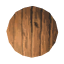
Bouclier en boisUn simple bouclier en bois.
Provenance
- Fabriquer: Table de fabrication à partir de 10 ×
 Bois, 4 ×
Bois, 4 ×  Résine, 4 ×
Résine, 4 ×  Bouts de cuir · par amélioration: 5 × Bois, 2 × Résine, 2 × Bouts de cuir
Bouts de cuir · par amélioration: 5 × Bois, 2 × Résine, 2 × Bouts de cuir
 Bouclier en bronze
Bouclier en bronze
Un bouclier en bronze poli, utile pour dévier une lame ou deux.
Provenance
 Bouclier en carapace
Bouclier en carapace
La carapace presque indestructible de vos ennemis offre une excellente protection.
Provenance
- Fabriquer: Forge noire à partir de 20 × Carapace, 3 ×
 Peau écailleuse, 10 × Eitr raffiné · par amélioration: 10 × Carapace, 3 × Peau écailleuse, 3 × Eitr raffiné
Peau écailleuse, 10 × Eitr raffiné · par amélioration: 10 × Carapace, 3 × Peau écailleuse, 3 × Eitr raffiné
 Bouclier en fer
Bouclier en fer
Sa légèreté et son centre incurvé en font un excellent outil pour dévier les attaques.
Provenance
- Fabriquer: Forge (niveau 2) à partir de 10 × Fer, 4 × Écorce ancienne · par amélioration: 5 × Fer, 1 × Écorce ancienne
 Bouclier en flametal
Bouclier en flametal
Le bouclier est et sera à jamais l'arme la plus importante du viking.
Provenance
- Fabriquer: Forge noire (niveau 3) à partir de 10 ×
 Cendrebois, 8 ×
Cendrebois, 8 ×  Flametal, 2 ×
Flametal, 2 ×  Peau d'asksvin · par amélioration: 10 × Cendrebois, 4 × Flametal, 2 × Peau d'asksvin
Peau d'asksvin · par amélioration: 10 × Cendrebois, 4 × Flametal, 2 × Peau d'asksvin
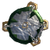
Bouclier en sombracierForgé dans le plus solide des métaux, capable de dévier les lames les plus redoutables.
Provenance
- Fabriquer: Forge (niveau 3) à partir de 10 × Bois précieux, 8 ×
 Sombracier, 5 ×
Sombracier, 5 × 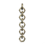
Chaîne · par amélioration: 10 ×Bois précieux, 4 × Sombracier, 2 × Chaîne
 Bouclier nordique
Bouclier nordique
Protégez-vous avec style.
Provenance
- Fabriquer: Forge noire (niveau 4) à partir de 15 ×
 Or-sang, 1 ×
Or-sang, 1 ×  Moule : bouclier nordique, 10 ×
Moule : bouclier nordique, 10 ×  Sapin nordique · par amélioration: 8 × Or-sang, 5 × Sapin nordique
Sapin nordique · par amélioration: 8 × Or-sang, 5 × Sapin nordique - Cuire: Fonderie à givre à partir de
 Moulage : bouclier nordique
Moulage : bouclier nordique
 Bouclier ophidien
Bouclier ophidien
Un bouclier robuste fait d'écailles superposées.
Provenance
- Fabriquer: Forge (niveau 3) à partir de 10 × Bois précieux, 4 × Fer, 8 × Écaille de serpent · par amélioration: 10 × Bois précieux, 2 × Fer, 4 × Écaille de serpent
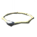
Bracelet de chevilleUn bijou léger, imprégné de célérité.
Provenance
- Fabriquer: Forge à partir de 5 × Fer, 5 ×
 Os atrophié, 1 ×
Os atrophié, 1 × 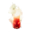
Trophée de surtling
 Braies de Fenris
Braies de Fenris
Les pattes de la bête étaient élancées et puissantes, de sorte qu'elle pouvait faire de grandes foulées.
Provenance
- Fabriquer: Table de fabrication (niveau 2) à partir de 20 ×
 Fourrure de Fenris, 5 ×
Fourrure de Fenris, 5 ×  Peau de loup, 10 × Bouts de cuir · par amélioration: 5 × Fourrure de Fenris, 3 × Peau de loup, 4 × Bouts de cuir
Peau de loup, 10 × Bouts de cuir · par amélioration: 5 × Fourrure de Fenris, 3 × Peau de loup, 4 × Bouts de cuir
 Bréchet
Bréchet
Cet os ancien se souvient de l'emplacement de nombreuses choses oubliées.
Provenance
- Butin de: Masse-d'Os · Marécages
 Broche en fer
Broche en fer
Une pièce délicate, mais néanmoins solide.
Provenance
- Fabriquer: Forge à partir de 5 × Fer, 5 × Écorce ancienne, 1 ×
 Trophée de sangsue
Trophée de sangsue
 Cagoule d'Odin
Cagoule d'Odin
Les plus grands guerriers d'Odin méritent les plus beaux vêtements.
Provenance
- Fabriquer: Table de fabrication à partir de 10 × Bouts de cuir, 4 ×
 Charbon · par amélioration: 5 × Bouts de cuir, 2 × Charbon
Charbon · par amélioration: 5 × Bouts de cuir, 2 × Charbon
 Cape d'Odin
Cape d'Odin
Les plus grands guerriers d'Odin méritent les plus beaux vêtements.
Provenance
- Fabriquer: Table de fabrication à partir de 10 × Bouts de cuir, 4 × Charbon · par amélioration: 5 × Bouts de cuir, 2 × Charbon
 Cape de l'orateur
Cape de l'orateur
Une étrange magie est tissée dans cette cape, la rendant légère et chaude.
Provenance
- Fabriquer: Table de galdr (niveau 4) à partir de 6 ×
 Peau de phoque, 2 ×
Peau de phoque, 2 ×  Fils des Nornes, 5 × Or-sang, 15 × Eitr raffiné · par amélioration: 3 × Peau de phoque, 1 × Fils des Nornes, 2 × Or-sang, 5 × Eitr raffiné
Fils des Nornes, 5 × Or-sang, 15 × Eitr raffiné · par amélioration: 3 × Peau de phoque, 1 × Fils des Nornes, 2 × Or-sang, 5 × Eitr raffiné
 Cape de Lox
Cape de Lox
Une fourrure épaisse et chaude issue d'une des bêtes les plus féroces.
Provenance
- Fabriquer: Table de fabrication (niveau 2) à partir de 6 ×
 Peau de Lox, 2 × Argent · par amélioration: 2 × Peau de Lox
Peau de Lox, 2 × Argent · par amélioration: 2 × Peau de Lox
 Cape de plumes
Cape de plumes
Avec cette cape, vous vous sentez plus léger. Vous pourriez presque vous envoler !
Provenance
- Fabriquer: Table de galdr à partir de 10 ×
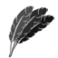
Plumes, 5 ×Peau écailleuse, 20 × Eitr raffiné · par amélioration: 2 × Plumes, 5 × Peau écailleuse, 3 × Eitr raffiné
 Cape des cendres
Cape des cendres
De fins fils métalliques sont tressés dans cette cape pour créer un motif complexe, à la manière d'un destin tissé par les Nornes elles-mêmes.
Provenance
- Fabriquer: Forge noire (niveau 3) à partir de 6 × Peau d'asksvin, 2 ×
 Tendon de morgen, 5 × Flametal · par amélioration: 2 × Peau d'asksvin
Tendon de morgen, 5 × Flametal · par amélioration: 2 × Peau d'asksvin
 Cape en fourrure de loup
Cape en fourrure de loup
Les loups sont des survivants. Celui-ci a juste joué de malchance. Sa fourrure vous tiendra désormais chaud par temps de neige.
Provenance
- Fabriquer: Table de fabrication (niveau 2) à partir de 6 × Peau de loup, 4 × Argent, 1 ×
 Trophée de loup · par amélioration: 4 × Peau de loup, 2 × Argent
Trophée de loup · par amélioration: 4 × Peau de loup, 2 × Argent
 Cape en peau d'élan
Cape en peau d'élan
Une cape chaude ornée de délicats motifs en fil d'or.
Provenance
- Fabriquer: Forge noire (niveau 4) à partir de 6 ×
 Peau d'élan, 2 ×
Peau d'élan, 2 ×  Tendon d'élan, 5 × Or-sang · par amélioration: 3 × Peau d'élan, 1 × Tendon d'élan, 2 × Or-sang
Tendon d'élan, 5 × Or-sang · par amélioration: 3 × Peau d'élan, 1 × Tendon d'élan, 2 × Or-sang
 Cape en peau de cerf
Cape en peau de cerf
Un côté chic et rustique.
Provenance
- Fabriquer: Table de fabrication (niveau 2) à partir de 4 × Peau de cerf, 5 ×
 Fragments d'os · par amélioration: 4 × Peau de cerf, 5 × Fragments d'os
Fragments d'os · par amélioration: 4 × Peau de cerf, 5 × Fragments d'os
 Cape en peau de troll
Cape en peau de troll
Le cuir de troll est robuste et souple.
Provenance
- Fabriquer: Table de fabrication (niveau 2) à partir de 10 ×
 Peau de troll, 10 × Fragments d'os · par amélioration: 5 × Peau de troll, 5 × Fragments d'os
Peau de troll, 10 × Fragments d'os · par amélioration: 5 × Peau de troll, 5 × Fragments d'os
 Cape en tissu
Cape en tissu
Une cape simple de voyageur.
Provenance
- Fabriquer: Table de fabrication (niveau 2) à partir de 20 ×
 Toile de lin, 1 × Argent · par amélioration: 4 × Toile de lin
Toile de lin, 1 × Argent · par amélioration: 4 × Toile de lin
 Capuche d'Ask
Capuche d'Ask
En tant que premier homme de Midgard, Ask savait qu'il était important de ne pas attirer l'attention.
Provenance
- Fabriquer: Forge noire (niveau 3) à partir de 15 × Toile de lin, 4 × Peau de Lox, 10 × Peau d'asksvin · par amélioration: 10 × Toile de lin, 2 × Peau de Lox, 5 × Peau d'asksvin
 Capuche d'Embla
Capuche d'Embla
La première sorcière cultivait son air mystique en se cachant le visage. Il est dit qu'en l'honorant de cette manière, vos sorts seront encore plus puissants.
Provenance
- Fabriquer: Table de galdr (niveau 2) à partir de 16 × Toile de lin, 15 × Eitr raffiné, 2 × Peau d'asksvin · par amélioration: 8 × Toile de lin, 5 × Eitr raffiné
 Capuche de Fenris
Capuche de Fenris
Les yeux de la bête étaient sages et savants, de sorte qu'elle pouvait mesurer la force d'un guerrier en un seul regard.
Provenance
- Fabriquer: Table de fabrication (niveau 2) à partir de 20 × Fourrure de Fenris, 2 × Peau de loup, 1 ×
 Trophée de cultiste · par amélioration: 5 × Fourrure de Fenris, 4 × Peau de loup
Trophée de cultiste · par amélioration: 5 × Fourrure de Fenris, 4 × Peau de loup
 Capuche de l'Avant-garde
Capuche de l'Avant-garde
Efficace pour protéger votre cou des éléments et des dents acérées de vos ennemis.
Provenance
- Fabriquer: Forge noire (niveau 4) à partir de 5 × Peau de phoque, 1 ×
 Moule : capuche de l'Avant-garde, 5 × Peau d'élan, 1 × Tendon d'élan · par amélioration: 3 × Peau de phoque, 3 × Peau d'élan, 1 × Tendon d'élan
Moule : capuche de l'Avant-garde, 5 × Peau d'élan, 1 × Tendon d'élan · par amélioration: 3 × Peau de phoque, 3 × Peau d'élan, 1 × Tendon d'élan - Cuire: Fonderie à givre à partir de
 Moulage : capuche de l'Avant-garde
Moulage : capuche de l'Avant-garde
 Capuche en fourrure de lox
Capuche en fourrure de lox
Contemplez le monde comme le ferait un lox.
Provenance
- Fabriquer: Table de fabrication (niveau 2) à partir de 4 × Peau de Lox, 4 × Fragments d'os, 2 × Racines de writhan · par amélioration: 2 × Peau de Lox, 2 × Fragments d'os, 1 × Racines de writhan
 Capuchon d'Eitr tissé
Capuchon d'Eitr tissé
La sorcellerie se lit dans le regard, alors la plupart des mages portent une capuche pour dissimuler leurs ambitions occultes.
Provenance
- Fabriquer: Table de galdr à partir de 16 × Toile de lin, 15 × Eitr raffiné, 2 × Fer · par amélioration: 8 × Toile de lin, 5 × Eitr raffiné
 Casque de drac
Casque de drac
Un casque complexe et soigneusement assemblé.
Provenance
- Fabriquer: Forge à partir de 20 × Argent, 2 × Peau de loup, 2 ×
 Trophée de drac · par amélioration: 5 × Argent
Trophée de drac · par amélioration: 5 × Argent
 Casque de racine
Casque de racine
Votre tête est parfaitement à l'aise dans ce nœud de racine et d'écorce.
Provenance
- Fabriquer: Table de fabrication (niveau 2) à partir de 10 × Racine, 10 × Écorce ancienne, 4 × Bouts de cuir · par amélioration: 2 × Racine, 5 × Écorce ancienne
 Casque du courage
Casque du courage
Un casque décoré avec les ailes de la victoire.
Provenance
- Fabriquer: Forge noire (niveau 4) à partir de 20 × Or-sang, 1 ×
 Moule : casque du courage, 4 × Peau d'élan · par amélioration: 15 × Or-sang, 3 × Peau d'élan
Moule : casque du courage, 4 × Peau d'élan · par amélioration: 15 × Or-sang, 3 × Peau d'élan - Cuire: Fonderie à givre à partir de
 Moulage : casque du courage
Moulage : casque du courage
 Casque en bronze
Casque en bronze
Ceci vous aidera à garder votre cerveau en place.
Provenance
- Fabriquer: Forge à partir de 5 × Bronze, 2 × Peau de cerf · par amélioration: 3 × Bronze
 Casque en carapace
Casque en carapace
On vous dira peut-être que vous avez l'air d'une grosse fourmi, mais on ne vous le dira qu'une fois.
Provenance
- Fabriquer: Forge noire à partir de 16 × Carapace, 3 × Peau écailleuse, 2 ×
 Mandibule, 4 × Eitr raffiné · par amélioration: 8 × Carapace, 1 × Peau écailleuse, 2 × Eitr raffiné
Mandibule, 4 × Eitr raffiné · par amélioration: 8 × Carapace, 1 × Peau écailleuse, 2 × Eitr raffiné
 Casque en cuir
Casque en cuir
Une cagoule de cuir renforcé.
Provenance
- Fabriquer: Table de fabrication (niveau 2) à partir de 6 × Peau de cerf · par amélioration: 6 × Peau de cerf, 5 × Fragments d'os
 Casque en cuir de troll
Casque en cuir de troll
Le cuir de troll est difficile à travailler mais permet de créer des armures exceptionnelles.
Provenance
- Fabriquer: Table de fabrication (niveau 2) à partir de 5 × Peau de troll, 3 × Fragments d'os · par amélioration: 2 × Peau de troll, 1 × Fragments d'os
 Casque en fer
Casque en fer
Un casque de fer poli, digne d'un héros.
Provenance
- Fabriquer: Forge à partir de 20 × Fer, 2 × Peau de cerf · par amélioration: 5 × Fer
 Casque en flamétal
Casque en flamétal
Tant que vous portez ce casque, vos ennemis y réfléchiront à deux fois avant d'essayer de vous arracher la tête.
Provenance
- Fabriquer: Forge noire (niveau 3) à partir de 16 × Flametal, 3 × Peau d'asksvin, 2 ×
 Os calciné, 4 × Eitr raffiné · par amélioration: 8 × Flametal, 1 × Peau d'asksvin, 2 × Eitr raffiné
Os calciné, 4 × Eitr raffiné · par amélioration: 8 × Flametal, 1 × Peau d'asksvin, 2 × Eitr raffiné
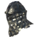
Casque rembourréConfortable et habilement travaillé.
Provenance
- Fabriquer: Forge à partir de 10 × Fer, 15 × Toile de lin · par amélioration: 5 × Fer, 10 × Toile de lin
 Chapeau de Noël
Chapeau de Noël
Un bonnet rouge dans le style des nains de maison.
Provenance
- Acheter: Haldor · 100 pièces
 Chapeau de paille
Chapeau de paille
Idéal pour éviter une insolation.
Provenance
- Acheter: Hildir · 300 pièces · une fois rapporté : Coffre en cuivre d'Hildir
 Chapeau de pêcheur
Chapeau de pêcheur
Ce chapeau à la mode ne peut être obtenu que par les aventuriers les plus chevronnés.
Provenance
- Fabriquer: Table de fabrication à partir de 1 ×
 Perche, 1 ×
Perche, 1 ×  Brochet, 1 ×
Brochet, 1 ×  Thon, 1 ×
Thon, 1 ×  Tétra, 1 ×
Tétra, 1 ×  Poisson-troll, 1 ×
Poisson-troll, 1 ×  Guinée saumon, 1 ×
Guinée saumon, 1 × 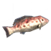
Mérou, 1 × Vieille de corail, 1 ×
Vieille de corail, 1 ×  Poisson-pêcheur, 1 ×
Poisson-pêcheur, 1 ×  Saumon nordique, 1 ×
Saumon nordique, 1 ×  Poisson-magma, 1 ×
Poisson-magma, 1 ×  Poisson-globe · par amélioration: 1 × Perche, 1 × Brochet, 1 × Thon, 1 × Tétra, 1 × Poisson-troll, 1 × Guinée saumon, 1 × Mérou, 1 × Vieille de corail, 1 × Poisson-pêcheur, 1 × Saumon nordique, 1 × Poisson-magma, 1 × Poisson-globe
Poisson-globe · par amélioration: 1 × Perche, 1 × Brochet, 1 × Thon, 1 × Tétra, 1 × Poisson-troll, 1 × Guinée saumon, 1 × Mérou, 1 × Vieille de corail, 1 × Poisson-pêcheur, 1 × Saumon nordique, 1 × Poisson-magma, 1 × Poisson-globe
 Cœur ardent
Cœur ardent
À chaque battement, le cœur brûle d'un désir ardent.
Provenance
- Fabriquer: Forge noire à partir de 5 × Flametal, 5 ×
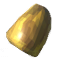
Soufre, 1 × Noyau en fusion, 1 ×
Noyau en fusion, 1 ×  Trophée de morgen
Trophée de morgen
 Cœur de cristal
Cœur de cristal
Un fragment de chagrin et de désespoir gelés.
Provenance
- Fabriquer: Forge à partir de 5 × Argent, 5 ×
 Cristal, 1 ×
Cristal, 1 ×  Trophée de golem de pierre
Trophée de golem de pierre
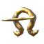
Cœur de la forêtIl est animé par des fragments d'une vie ancienne.
Provenance
- Fabriquer: Forge à partir de 5 × Bronze, 5 ×
 Graine ancienne, 1 ×
Graine ancienne, 1 ×  Trophée de chaman naingris
Trophée de chaman naingris
 Coiffe de l'orateur
Coiffe de l'orateur
Les esprits de cette terre viennent lorsque vous les appelez. Votre déguisement les trompera-t-il ?
Provenance
- Fabriquer: Table de galdr (niveau 3) à partir de 2 × Tendon d'élan, 1 ×
 Moule : coiffe de l'orateur, 1 ×
Moule : coiffe de l'orateur, 1 ×  Trophée d'élan, 3 × Fils des Nornes · par amélioration: 1 × Tendon d'élan, 2 × Fils des Nornes
Trophée d'élan, 3 × Fils des Nornes · par amélioration: 1 × Tendon d'élan, 2 × Fils des Nornes - Cuire: Fonderie à givre à partir de
 Moulage : coiffe de l'orateur
Moulage : coiffe de l'orateur
 Coiffe de l'ours
Coiffe de l'ours
Laissez la fureur primitive de l'ours vous consumer.
Provenance
- Fabriquer: Table de fabrication (niveau 2) à partir de 5 × Peau d'ours, 1 ×
 Trophée d'ours · par amélioration: 2 × Peau d'ours
Trophée d'ours · par amélioration: 2 × Peau d'ours
 Couronne de racines
Couronne de racines
Une coiffe douloureuse, mais délicate.
Provenance
- Acheter: Sorcière du marécage · 3 000 pièces · après avoir vaincu Writhan
 Couronne de sorcière
Couronne de sorcière
Il est dit que l'âme d'une sorcière peut conférer d'étranges pouvoirs aux mortels...
Provenance
- Fabriquer: Forge noire à partir de 5 × Or-sang, 5 × Fils des Nornes, 1 ×
 Trophée d'Hexen
Trophée d'Hexen
 Couronne de Valheim
Couronne de Valheim
Une glorieuse récompense pour qui a su se montrer digne.
Provenance
- Fabriquer: Forge noire (niveau 4) à partir de 5 × Or-sang, 1 ×
 Joyau de la couronne
Joyau de la couronne
 Cuirasse de racines
Cuirasse de racines
Forgée avec talent et assez solide pour arrêter les lames les plus aiguisées.
Provenance
- Fabriquer: Table de fabrication (niveau 2) à partir de 10 × Racine, 10 × Écorce ancienne, 2 × Peau de cerf · par amélioration: 2 × Racine, 5 × Écorce ancienne
 Cuirasse en plaques de bronze
Cuirasse en plaques de bronze
Une cuirasse en bronze martelé.
Provenance
- Fabriquer: Forge à partir de 5 × Bronze, 2 × Peau de cerf · par amélioration: 3 × Bronze
 Cuirasse rembourrée
Cuirasse rembourrée
Forgée avec talent et assez solide pour arrêter les lames les plus aiguisées.
Provenance
- Fabriquer: Forge (niveau 2) à partir de 10 × Fer, 20 × Toile de lin · par amélioration: 3 × Fer, 10 × Toile de lin
 Diadème de dverger
Diadème de dverger
Une source portative de lumière perpétuelle pour ceux qui s'aventurent dans les donjons.
Provenance
- Acheter: Haldor · 620 pièces
 Écu en bois
Écu en bois
Un bouclier lourd et grossier en bois.
Provenance
- Fabriquer: Table de fabrication à partir de 10 × Bois, 6 × Bouts de cuir · par amélioration: 5 × Bois, 3 × Bouts de cuir
 Écu en fer
Écu en fer
Un grand bouclier de fer résistant.
Provenance
- Fabriquer: Forge (niveau 2) à partir de 15 × Bois précieux, 10 × Fer · par amélioration: 10 × Bois précieux, 5 × Fer
 Écu en flametal
Écu en flametal
La meilleure défense est une défense irréprochable.
Provenance
- Fabriquer: Forge noire (niveau 3) à partir de 15 × Cendrebois, 10 × Flametal, 5 × Peau d'asksvin · par amélioration: 10 × Cendrebois, 4 × Flametal, 2 × Peau d'asksvin
 Écu en os
Écu en os
Les os de combattants morts assurent une bonne protection.
Provenance
- Fabriquer: Table de fabrication (niveau 3) à partir de 10 × Bois, 10 × Fragments d'os, 3 ×
 Trophée de squelette · par amélioration: 5 × Bois, 5 × Fragments d'os
Trophée de squelette · par amélioration: 5 × Bois, 5 × Fragments d'os
 Écu en sombracier
Écu en sombracier
Un écu de métal sombre luisant.
Provenance
- Fabriquer: Forge (niveau 3) à partir de 15 × Bois précieux, 10 × Sombracier, 7 × Chaîne · par amélioration: 10 × Bois précieux, 4 × Sombracier, 2 × Chaîne
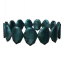
Fers retentissantsUne chaîne tranchante comme le rasoir.
Provenance
- Fabriquer: Forge noire à partir de 5 × Eitr raffiné, 5 × Peau écailleuse, 1 × Mandibule, 1 ×
 Trophée de fouineur
Trophée de fouineur
 Foulard noué bleu
Foulard noué bleu
Un foulard noué bleu et bien pratique.
Provenance
- Acheter: Hildir · 200 pièces · une fois rapporté : Coffre en cuivre d'Hildir
 Foulard noué jaune
Foulard noué jaune
Un foulard jaune pratique.
Provenance
- Acheter: Hildir · 250 pièces · une fois rapporté : Coffre en argent d'Hildir
 Foulard torsadé rouge
Foulard torsadé rouge
Un foulard rouge sophistiqué.
Provenance
- Acheter: Hildir · 300 pièces · une fois rapporté : Coffre en bronze d'Hildir
 Foulard torsadé vert
Foulard torsadé vert
Un foulard vert sophistiqué.
Provenance
- Acheter: Hildir · 250 pièces · une fois rapporté : Coffre en argent d'Hildir
 Grand bouclier nordique
Grand bouclier nordique
Vos adversaires ne pourront pas vous toucher s'ils ne vous voient pas !
Provenance
- Fabriquer: Forge noire (niveau 4) à partir de 20 × Or-sang, 1 ×
 Moule : grand bouclier nordique, 20 × Sapin nordique · par amélioration: 10 × Or-sang, 10 × Sapin nordique
Moule : grand bouclier nordique, 20 × Sapin nordique · par amélioration: 10 × Or-sang, 10 × Sapin nordique - Cuire: Fonderie à givre à partir de
 Moulage : grand bouclier nordique
Moulage : grand bouclier nordique
 Jambières de loup
Jambières de loup
Des braies chaudes en peau de loup.
Provenance
- Fabriquer: Forge (niveau 2) à partir de 20 × Argent, 5 × Peau de loup, 4 ×
 Croc de loup · par amélioration: 5 × Argent, 2 × Peau de loup, 1 × Croc de loup
Croc de loup · par amélioration: 5 × Argent, 2 × Peau de loup, 1 × Croc de loup
 Jambières en carapace
Jambières en carapace
Des protections pour les jambes en carapace robuste.
Provenance
- Fabriquer: Forge noire à partir de 20 × Carapace, 3 × Peau écailleuse, 5 × Fer, 4 × Eitr raffiné · par amélioration: 10 × Carapace, 1 × Peau écailleuse, 2 × Eitr raffiné
 Jambières en flametal
Jambières en flametal
Un pantalon épais isole de la chaleur, tandis que de solides jambières protègent vos tibias des coups bas.
Provenance
- Fabriquer: Forge noire (niveau 3) à partir de 20 × Flametal, 3 × Peau d'asksvin, 5 × Os calciné · par amélioration: 10 × Flametal, 1 × Peau d'asksvin
 Jambières en plaques de bronze
Jambières en plaques de bronze
Jambières de bronze pour protéger vos jambes.
Provenance
- Fabriquer: Forge à partir de 5 × Bronze, 2 × Peau de cerf · par amélioration: 3 × Bronze
 Jambières en plaques de fer
Jambières en plaques de fer
Jambières en fer pour protéger vos jambes.
Provenance
- Fabriquer: Forge (niveau 2) à partir de 20 × Fer, 2 × Peau de cerf · par amélioration: 5 × Fer
 Jambières rembourrées
Jambières rembourrées
Des protections de jambes fabriquées par un expert.
Provenance
- Fabriquer: Forge (niveau 2) à partir de 10 × Fer, 20 × Toile de lin · par amélioration: 3 × Fer, 10 × Toile de lin
 Jörmundling
Jörmundling
Des cris d'agonie tourmentés résonnent au sein de la pierre.
Provenance
- Fabriquer: Forge noire à partir de 5 × Flametal, 5 × Eitr raffiné, 1 ×
 Pierre-de-sang, 1 ×
Pierre-de-sang, 1 ×  Trophée de valkyrie déchue
Trophée de valkyrie déchue
 Lumière de feu-follet
Lumière de feu-follet
Un feu-follet qui vous est lié et vous guide à travers la brume.
Provenance
- Fabriquer: Table de fabrication à partir de 1 × Argent, 1 ×
 Feu-follet
Feu-follet
 Manteau de Fenris
Manteau de Fenris
La bête pouvait respirer profondément, de sorte que son hurlement pouvait être entendu dans tout le pays.
Provenance
- Fabriquer: Table de fabrication (niveau 2) à partir de 20 × Fourrure de Fenris, 5 × Peau de loup, 10 × Bouts de cuir · par amélioration: 5 × Fourrure de Fenris, 3 × Peau de loup, 4 × Bouts de cuir
 Manteau en asksvin
Manteau en asksvin
Cette cape épaisse prend le vent, à l'instar de la voile d'un navire.
Provenance
- Fabriquer: Table de galdr (niveau 2) à partir de 6 × Peau d'asksvin, 2 × Tendon de morgen · par amélioration: 2 × Peau d'asksvin
 Marque de l'ours
Marque de l'ours
Si ces motifs subtils peuvent protéger des guerriers de contrées lointaines, ils peuvent certainement vous protéger également.
Provenance
- Fabriquer: Table de fabrication (niveau 2) à partir de 5 × Peau d'ours, 2 ×
 Patte d'ours, 4 ×
Patte d'ours, 4 ×  Myrtilles · par amélioration: 2 × Peau d'ours, 1 × Myrtilles
Myrtilles · par amélioration: 2 × Peau d'ours, 1 × Myrtilles
 Megingjord
Megingjord
Donne à son porteur une force surhumaine.
Provenance
- Acheter: Haldor · 950 pièces
 Pagne de l'ours
Pagne de l'ours
Il couvre l'essentiel, mais pas beaucoup plus.
Provenance
- Fabriquer: Table de fabrication (niveau 2) à partir de 5 × Peau d'ours, 4 × Myrtilles · par amélioration: 2 × Peau d'ours, 1 × Myrtilles
 Pantalon d'Ask
Pantalon d'Ask
Le premier homme qui parcourut Midgard préférait marcher à pas légers. Les porteurs de ce pantalon pourraient s'inspirer de lui.
Provenance
- Fabriquer: Forge noire (niveau 3) à partir de 15 × Toile de lin, 4 × Peau de Lox, 10 × Peau d'asksvin · par amélioration: 10 × Toile de lin, 2 × Peau de Lox, 5 × Peau d'asksvin
 Pantalon d'Eitr tissé
Pantalon d'Eitr tissé
Les pantalons que portent les mages sont toujours serrés. L'inconfort nourrit la concentration nécessaire à la magie...
Provenance
- Fabriquer: Table de galdr à partir de 20 × Toile de lin, 20 × Eitr raffiné, 10 × Peau écailleuse · par amélioration: 10 × Toile de lin, 5 × Eitr raffiné
 Pantalon d'Embla
Pantalon d'Embla
Nul ne peut dire si la première sorcière portait vraiment ce pantalon de la sorte.
Provenance
- Fabriquer: Table de galdr (niveau 2) à partir de 20 × Toile de lin, 20 × Eitr raffiné, 10 × Peau d'asksvin · par amélioration: 10 × Toile de lin, 5 × Eitr raffiné
 Pantalon de l'Avant-garde
Pantalon de l'Avant-garde
Un pantalon chaud pour les climats froids. Avec ces bottes, vous ne glisserez pas sur le verglas.
Provenance
- Fabriquer: Forge noire (niveau 4) à partir de 12 × Or-sang, 1 ×
 Moule : pantalon de l'Avant-garde, 8 ×
Moule : pantalon de l'Avant-garde, 8 ×  Poignée de poils d'elaking, 4 × Peau de phoque · par amélioration: 6 × Or-sang, 4 × Poignée de poils d'elaking, 2 × Peau de phoque
Poignée de poils d'elaking, 4 × Peau de phoque · par amélioration: 6 × Or-sang, 4 × Poignée de poils d'elaking, 2 × Peau de phoque - Cuire: Fonderie à givre à partir de
 Moulage : pantalon de l'Avant-garde
Moulage : pantalon de l'Avant-garde
 Pantalon de l'orateur
Pantalon de l'orateur
S'enroule fermement autour de vos jambes pour empêcher que le froid n'atteigne votre peau.
Provenance
- Fabriquer: Table de galdr (niveau 3) à partir de 6 × Or-sang, 1 ×
 Moule : pantalon de l'orateur, 6 × Peau d'élan, 5 × Fils des Nornes · par amélioration: 3 × Or-sang, 3 × Peau d'élan, 3 × Fils des Nornes
Moule : pantalon de l'orateur, 6 × Peau d'élan, 5 × Fils des Nornes · par amélioration: 3 × Or-sang, 3 × Peau d'élan, 3 × Fils des Nornes - Cuire: Fonderie à givre à partir de
 Moulage : pantalon de l'orateur
Moulage : pantalon de l'orateur
 Pantalon du courage
Pantalon du courage
Des bottes renforcées et un pantalon pour vous garder au chaud lorsque vous vous enfoncez dans la neige.
Provenance
- Fabriquer: Forge noire (niveau 4) à partir de 20 × Or-sang, 1 ×
 Moule : pantalon du courage, 8 × Peau d'élan, 4 ×
Moule : pantalon du courage, 8 × Peau d'élan, 4 ×  Lanières de cuir · par amélioration: 15 × Or-sang, 3 × Peau d'élan, 3 × Lanières de cuir
Lanières de cuir · par amélioration: 15 × Or-sang, 3 × Peau d'élan, 3 × Lanières de cuir - Cuire: Fonderie à givre à partir de
 Moulage : pantalon du courage
Moulage : pantalon du courage
 Pantalon en cuir
Pantalon en cuir
Il couine un peu quand vous marchez.
Provenance
- Fabriquer: Table de fabrication (niveau 2) à partir de 6 × Peau de cerf · par amélioration: 6 × Peau de cerf, 5 × Fragments d'os
 Pantalon en cuir de troll
Pantalon en cuir de troll
Pantalon de peau de troll coriace.
Provenance
- Fabriquer: Table de fabrication (niveau 2) à partir de 5 × Peau de troll · par amélioration: 2 × Peau de troll
 Pantalon en fourrure de lox
Pantalon en fourrure de lox
Doux, silencieux et souple.
Provenance
- Fabriquer: Table de fabrication (niveau 2) à partir de 5 × Peau de Lox, 8 × Fragments d'os, 2 × Racine · par amélioration: 3 × Peau de Lox, 4 × Fragments d'os, 1 × Racine
 Pantalon en haillons
Pantalon en haillons
Une solution simple à la nudité.
Provenance
- Fabriquer: Table de fabrication à partir de 5 × Bouts de cuir · par amélioration: 5 × Bouts de cuir
 Parure d'ours maudit
Parure d'ours maudit
Des fragments d'os et d'épais morceaux de peau forment cette jupe robuste.
Provenance
- Fabriquer: Forge (niveau 2) à partir de 10 × Peau d'ours, 1 ×
 Cage thoracique d'ours maudit, 4 × Toile de lin · par amélioration: 5 × Peau d'ours, 1 × Cage thoracique d'ours maudit, 1 × Toile de lin
Cage thoracique d'ours maudit, 4 × Toile de lin · par amélioration: 5 × Peau d'ours, 1 × Cage thoracique d'ours maudit, 1 × Toile de lin
 Peau de fer
Peau de fer
Une peau endurcie imprégnée de violence.
Provenance
- Fabriquer: Forge à partir de 5 × Sombracier, 5 × Peau de Lox, 1 ×
 Trophée de lox
Trophée de lox
Pendentif en bronze
Un magnifique pendentif symbolisant l'endurance de l'ours.
Provenance
- Fabriquer: Forge à partir de 5 × Bronze, 1 × Trophée d'ours, 3 ×
 Rubis
Rubis
 Perce-cou
Perce-cou
Une griffe, de l'os et de l'or. Abreuvez-les de sang et ils vous accorderont leur faveur.
Provenance
- Fabriquer: Forge noire à partir de 5 × Or-sang, 5 ×
 Longues griffes, 1 × Trophée d'élan
Longues griffes, 1 × Trophée d'élan
 Plastron d'Ask
Plastron d'Ask
Le premier homme de Midgard savait comment protéger ses organes vitaux, peut-être avec un plastron du genre.
Provenance
- Fabriquer: Forge noire (niveau 3) à partir de 15 × Toile de lin, 4 × Peau de Lox, 10 × Peau d'asksvin · par amélioration: 10 × Toile de lin, 2 × Peau de Lox, 5 × Peau d'asksvin
 Plastron de cuir de l'Avant-garde
Plastron de cuir de l'Avant-garde
Une armure en cuir fabriqué d'une main d'expert qui offre une protection excellente sans limiter les mouvements pendant le combat.
Provenance
- Fabriquer: Forge noire (niveau 4) à partir de 12 × Or-sang, 1 ×
 Moule : plastron de cuir de l'Avant-garde, 8 × Poignée de poils d'elaking, 4 × Lanières de cuir · par amélioration: 6 × Or-sang, 4 × Poignée de poils d'elaking, 2 × Lanières de cuir
Moule : plastron de cuir de l'Avant-garde, 8 × Poignée de poils d'elaking, 4 × Lanières de cuir · par amélioration: 6 × Or-sang, 4 × Poignée de poils d'elaking, 2 × Lanières de cuir - Cuire: Fonderie à givre à partir de
 Moulage : plastron de cuir de l'Avant-garde
Moulage : plastron de cuir de l'Avant-garde
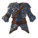
Plastron de loupUn haut en peau de loup, chaud, avec un côté sauvage. Il protège du froid.
Provenance
- Fabriquer: Forge (niveau 2) à partir de 20 × Argent, 5 × Peau de loup, 1 × Chaîne · par amélioration: 5 × Argent, 2 × Peau de loup
 Plastron du courage
Plastron du courage
La fourrure, la peau et le métal s'associent pour vous protéger des coups de vos adversaires.
Provenance
- Fabriquer: Forge noire (niveau 4) à partir de 20 × Or-sang, 1 ×
 Moule : plastron du courage, 8 × Peau d'élan, 4 × Lanières de cuir · par amélioration: 15 × Or-sang, 3 × Peau d'élan, 3 × Lanières de cuir
Moule : plastron du courage, 8 × Peau d'élan, 4 × Lanières de cuir · par amélioration: 15 × Or-sang, 3 × Peau d'élan, 3 × Lanières de cuir - Cuire: Fonderie à givre à partir de
 Moulage : plastron du courage
Moulage : plastron du courage
 Plastron en carapace
Plastron en carapace
Un plastron façonné dans la carapace polie d'un insecte géant.
Provenance
- Fabriquer: Forge noire à partir de 20 × Carapace, 3 × Peau écailleuse, 5 × Fer, 4 × Eitr raffiné · par amélioration: 10 × Carapace, 1 × Peau écailleuse, 2 × Eitr raffiné
 Plastron en flametal
Plastron en flametal
La fusion du mystérieux flametal et des os calcinés crée une enveloppe protectrice plus résistante que n'importe quel matériau provenant de Midgard.
Provenance
- Fabriquer: Forge noire (niveau 3) à partir de 20 × Flametal, 3 × Peau d'asksvin, 5 × Os calciné, 1 ×
 Cœur de morgen · par amélioration: 10 × Flametal, 1 × Peau d'asksvin
Cœur de morgen · par amélioration: 10 × Flametal, 1 × Peau d'asksvin
 Robe bleue avec châle
Robe bleue avec châle
Une robe bleue avec un châle bien chaud.
Provenance
- Acheter: Hildir · 450 pièces · une fois rapporté : Coffre en argent d'Hildir
 Robe bleue avec perles
Robe bleue avec perles
Une robe bleue décorée de perles et d'argent.
Provenance
- Acheter: Hildir · 550 pièces · une fois rapporté : Coffre en bronze d'Hildir
 Robe bleue simple
Robe bleue simple
Une robe bleue simple.
Provenance
- Acheter: Hildir · 350 pièces · une fois rapporté : Coffre en cuivre d'Hildir
 Robe d'Eitr tissé
Robe d'Eitr tissé
Les plis et coutures de cette robe aux couches astucieuses regorgent de sorts et enchantements.
Provenance
- Fabriquer: Table de galdr à partir de 20 × Toile de lin, 20 × Eitr raffiné, 10 × Plumes, 5 × Peau écailleuse · par amélioration: 10 × Toile de lin, 5 × Eitr raffiné
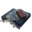
Robe d'EmblaImprégnée du pouvoir de la première sorcière, cette robe confère un avantage à quiconque cherche à manier l'art ancien de la magie.
Provenance
- Fabriquer: Table de galdr (niveau 2) à partir de 20 × Toile de lin, 20 × Eitr raffiné, 10 × Peau d'asksvin, 5 × Flametal · par amélioration: 10 × Toile de lin, 5 × Eitr raffiné, 2 × Flametal
 Robe de l'orateur
Robe de l'orateur
Une robe aux coutures dorées qui ne va qu'aux plus puissants de tous les mages.
Provenance
- Fabriquer: Table de galdr (niveau 3) à partir de 6 × Or-sang, 1 ×
 Moule : robe de l'orateur, 6 × Peau d'élan, 5 × Fils des Nornes · par amélioration: 3 × Or-sang, 3 × Peau d'élan, 3 × Fils des Nornes
Moule : robe de l'orateur, 6 × Peau d'élan, 5 × Fils des Nornes · par amélioration: 3 × Or-sang, 3 × Peau d'élan, 3 × Fils des Nornes - Cuire: Fonderie à givre à partir de
 Moulage : robe de l'orateur
Moulage : robe de l'orateur
 Robe des moissons
Robe des moissons
Lorsque l'on travaille dans les champs, il est important de porter une tenue adéquate. Cette longue robe vous protège les genoux.
Provenance
- Acheter: Hildir · 550 pièces · une fois rapporté : Coffre en cuivre d'Hildir
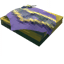
Robe jaune avec châleUne robe jaune avec un châle bien chaud.
Provenance
- Acheter: Hildir · 450 pièces · une fois rapporté : Coffre en argent d'Hildir
 Robe jaune avec perles
Robe jaune avec perles
Une robe jaune décorée de perles et d'argent.
Provenance
- Acheter: Hildir · 550 pièces · une fois rapporté : Coffre en bronze d'Hildir
 Robe jaune simple
Robe jaune simple
Une robe jaune simple.
Provenance
- Acheter: Hildir · 350 pièces · une fois rapporté : Coffre en cuivre d'Hildir
 Robe marron avec châle
Robe marron avec châle
Une robe marron avec un châle bien chaud.
Provenance
- Acheter: Hildir · 450 pièces · une fois rapporté : Coffre en argent d'Hildir
 Robe marron avec perles
Robe marron avec perles
Une robe marron décorée de perles et d'argent.
Provenance
- Acheter: Hildir · 550 pièces · une fois rapporté : Coffre en bronze d'Hildir
 Robe marron simple
Robe marron simple
Une robe marron simple.
Provenance
- Acheter: Hildir · 350 pièces · une fois rapporté : Coffre en cuivre d'Hildir
 Robe neutre simple
Robe neutre simple
Une robe simple.
Provenance
- Acheter: Hildir · 250 pièces
 Targe en carapace
Targe en carapace
Les fouineurs sont pourvus d'un crâne solide, mais léger : une protection idéale, peu encombrante et maniable.
Provenance
- Fabriquer: Forge noire à partir de 16 × Carapace, 3 × Peau écailleuse, 10 × Eitr raffiné · par amélioration: 8 × Carapace, 3 × Peau écailleuse, 3 × Eitr raffiné
 Targe nordique
Targe nordique
Une méthode de protection efficace si vous avez suffisamment de talent.
Provenance
- Fabriquer: Forge noire (niveau 4) à partir de 10 × Or-sang, 1 ×
 Moule : targe nordique, 10 × Sapin nordique · par amélioration: 5 × Or-sang, 5 × Sapin nordique
Moule : targe nordique, 10 × Sapin nordique · par amélioration: 5 × Or-sang, 5 × Sapin nordique - Cuire: Fonderie à givre à partir de
 Moulage : targe nordique
Moulage : targe nordique
 Torse d'ours maudit
Torse d'ours maudit
Formé des os brisés d'un ours affligé.
Provenance
- Fabriquer: Forge (niveau 2) à partir de 4 × Peau d'ours, 3 × Cage thoracique d'ours maudit, 4 × Toile de lin · par amélioration: 2 × Peau d'ours, 1 × Cage thoracique d'ours maudit, 1 × Toile de lin
 Tunique bleue avec cape
Tunique bleue avec cape
Une tunique bleue avec une cape.
Provenance
- Acheter: Hildir · 450 pièces · une fois rapporté : Coffre en argent d'Hildir
 Tunique bleue avec perles
Tunique bleue avec perles
Une tunique bleue décorée de perles et d'argent.
Provenance
- Acheter: Hildir · 550 pièces · une fois rapporté : Coffre en bronze d'Hildir
 Tunique bleue simple
Tunique bleue simple
Une tunique bleue simple.
Provenance
- Acheter: Hildir · 350 pièces · une fois rapporté : Coffre en cuivre d'Hildir
 Tunique des moissons
Tunique des moissons
Lorsque l'on travaille dans les champs, il est important de porter une tenue adéquate. Cette courte tunique laisse passer la brise.
Provenance
- Acheter: Hildir · 550 pièces · une fois rapporté : Coffre en cuivre d'Hildir
 Tunique en cuir
Tunique en cuir
Une tunique faite de peau d'animal.
Provenance
- Fabriquer: Table de fabrication (niveau 2) à partir de 6 × Peau de cerf · par amélioration: 6 × Peau de cerf, 5 × Fragments d'os
 Tunique en cuir de troll
Tunique en cuir de troll
Les trolls sont difficiles à dépouiller mais leur cuir est doux et chaud.
Provenance
- Fabriquer: Table de fabrication (niveau 2) à partir de 5 × Peau de troll · par amélioration: 2 × Peau de troll
 Tunique en haillons
Tunique en haillons
Mieux que rien.
Provenance
- Fabriquer: Table de fabrication à partir de 5 × Bouts de cuir · par amélioration: 5 × Bouts de cuir
 Tunique jaune avec cape
Tunique jaune avec cape
Une tunique jaune avec une cape.
Provenance
- Acheter: Hildir · 450 pièces · une fois rapporté : Coffre en argent d'Hildir
 Tunique jaune avec perles
Tunique jaune avec perles
Une tunique jaune décorée de perles et d'argent.
Provenance
- Acheter: Hildir · 550 pièces · une fois rapporté : Coffre en bronze d'Hildir
 Tunique jaune simple
Tunique jaune simple
Une tunique jaune simple.
Provenance
- Acheter: Hildir · 350 pièces · une fois rapporté : Coffre en cuivre d'Hildir
 Tunique neutre simple
Tunique neutre simple
Une tunique simple.
Provenance
- Acheter: Hildir · 250 pièces
 Tunique rouge avec cape
Tunique rouge avec cape
Une tunique rouge avec une cape.
Provenance
- Acheter: Hildir · 450 pièces · une fois rapporté : Coffre en argent d'Hildir
 Tunique rouge avec perles
Tunique rouge avec perles
Une tunique rouge décorée de perles et d'argent.
Provenance
- Acheter: Hildir · 550 pièces · une fois rapporté : Coffre en bronze d'Hildir
 Tunique rouge simple
Tunique rouge simple
Une tunique rouge simple.
Provenance
- Acheter: Hildir · 350 pièces · une fois rapporté : Coffre en cuivre d'Hildir
 Veste en fourrure de lox
Veste en fourrure de lox
Une forte odeur s'y accroche.
Provenance
- Fabriquer: Table de fabrication (niveau 2) à partir de 5 × Peau de Lox, 8 × Fragments d'os, 2 × Racine · par amélioration: 6 × Peau de Lox, 4 × Fragments d'os, 1 × Racine
 Visage d'ours maudit
Visage d'ours maudit
Inspire la peur chez l'ennemi et le courage chez vos camarades lorsqu'il est porté.
Provenance
- Fabriquer: Forge (niveau 2) à partir de 5 × Peau d'ours, 1 ×
 Trophée d'ours maudit · par amélioration: 2 × Peau d'ours
Trophée d'ours maudit · par amélioration: 2 × Peau d'ours
 Vision du loup
Vision du loup
Un bandeau inspiré par l'esprit vif et furieux du loup.
Provenance
- Fabriquer: Forge à partir de 5 × Argent, 5 × Croc de loup, 1 ×
 Trophée de fenring
Trophée de fenring
 Voile d'ombre
Voile d'ombre
Idéal pour celles et ceux qui dansent avec la mort et préfèrent esquiver les coups de leurs ennemis.
Provenance
- Fabriquer: Forge à partir de 5 × Sombracier, 1 ×
 Trophée de berserker gobelin, 10 × Toile de lin
Trophée de berserker gobelin, 10 × Toile de lin